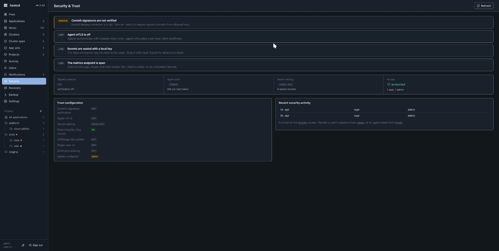

hostcd — security model
hostcd is built so that managing a fleet does not widen its attack surface. The full policy and threat model live in the source repository's SECURITY.md; this is the operator-facing summary.
Trust boundaries
- Hosts only dial out. The agent long-polls the server over HTTPS. Nothing listens on a managed host — there is no inbound SSH requirement and no open agent port.
- Per-host agent tokens. Install-over-SSH mints a fresh random token per host (stored as a digest server-side). A host's token authenticates only that host; revoking one does not affect others.
- TOFU host keys. SSH host keys are pinned on first use for install-over-SSH.
- Optional agent mTLS.
-agent-mtlsadds a per-host client certificate (P-256 CA) on top of the bearer token.
Control-plane auth
- UI/API sign-in is bcrypt with lockout; sessions are cookie-based and
SameSite=Strict, and every state-changing request must beContent-Type: application/json(a CSRF guard). - Users are admin or viewer, optionally scoped by cluster, folder, or host labels.
- Enterprise adds SSO (SAML 2.0 and OIDC, with single logout) and SCIM provisioning.
Secrets
The data-encryption key seals secrets in the server state with AES-256-GCM. For defence in depth, Enterprise can wrap it with Vault Transit instead of keeping a local key.
Supply chain
Releases are built and signed in CI with keyless cosign (no private key in CI) and a published SHA256SUMS + SBOM. The public mirror is not re-signed, so artifacts stay independently verifiable against the source workflow's identity. See install for the verify command.
Self-update is fail-closed
The opt-in one-click updater runs as root, unattended, so it is strict: it requires cosign (no HTTPS-only fallback), pins one concrete release tag (and aborts rather than follow a moving latest), and verifies the installer's own checksum and provenance before running it. It never escalates privilege from the server (which runs with NoNewPrivileges): the server writes a trigger file and a root systemd .path unit runs the update.

Posture surfaced in the UI
The Security & Trust screen scores the live posture — commit-signature verification, agent mTLS, secret sealing, state integrity, SSO/SCIM, and whether the metrics endpoint is open — so you can see at a glance what is on and what to harden next. -verify requires signed commits from allowed keys; -metrics-token protects /metrics on an untrusted network.
Report vulnerabilities per the source repository's SECURITY.md. Next: overview · operations.
This page is also available as Markdown, indexed in llms.txt for AI assistants.